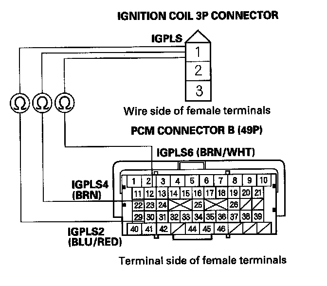

DTC Troubleshooting
DTC P0301: No. 1 Cylinder Misfire DetectedDTC P0302: No. 2 Cylinder Misfire Detected
DTC P0303: No. 3 Cylinder Misfire Detected
DTC P0304: No. 4 Cylinder Misfire Detected
DTC P0305: No. 5 Cylinder Misfire Detected
DTC P0306: No. 6 Cylinder Misfire Detected
NOTE: Before you troubleshoot, record all freeze data and any on-board snapshot, and review the general troubleshooting information.
1. Turn the ignition switch ON (II).
2. Clear the DTC with the HDS.
3. Start the engine, and let it idle without load for 2 minutes (in Park or neutral).
4. Monitor the OBD STATUS for DTC P0301, P0302, P0303, P0304, P0305, or P0306 in the DTCs MENU with the HDS.
Does the screen indicate FAILED?
YES - Go to step 9.
NO - If the screen indicates PASSED, go to step 5. If the screen indicates EXECUTING, keep idling until a result comes on. If the screen indicates OUT OF CONDITION, wait for several minutes, and recheck.
5. Check the CYL1 MISFIRE, CYL2 MISFIRE, CYL3 MISFIRE, CYL4 MISFIRE, CYL5 MISFIRE, and/or CYL6 MISFIRE in the DATA LIST for 10 minutes with the HDS.
Does CYL1 MISFIRE, CYL2 MISFIRE, CYL3 MISFIRE, CYL4 MISFIRE, CYL5 MISFIRE, and/or CYL6 MISFIRE show misfire counts?
YES - Go to step 9.
NO - Go to step 6.
6. Test-drive the vehicle for several minutes in the range of these recorded freeze data parameters:
- ENGINE SPEED
- VSS
- REL TP SENSOR
- CLV (calculated load value)
- GEAR POSITION
- ECT SENSOR 1
7. Monitor the OBD STATUS for DTC P0301, P0302, P0303, P0304, P0305, or P0306 in the DTCs MENU with the HDS.
Does the screen indicate FAILED?
YES - Go to step 9.
NO - If the screen indicates PASSED, go to step 8. If the screen indicates EXECUTING, keep driving until a result comes on. If the screen indicates OUT OF CONDITION, go to step 6.
8. Check the CYL1 MISFIRE, CYL2 MISFIRE, CYL3 MISFIRE, CYL4 MISFIRE, CYL5 MISFIRE, and/or CYL6 MISFIRE in the DATA LIST for 10 minutes with the HDS.
Does CYL1 MISFIRE, CYL2 MISFIRE, CYL3 MISFIRE, CYL4 MISFIRE, CYL5 MISFIRE, and/or CYL6 MISFIRE show misfire counts?
YES - Go to step 9.
NO - Intermittent failure, the system is OK at this time. Check the fuel and ignition system circuit connectors for loose wires or poor connections.
9. Turn the ignition switch OFF.
10. Exchange the ignition coil from the problem cylinder with one from another cylinder.
11. Reconnect all connectors.
12. Test-drive the vehicle for several minutes in the range of these recorded freeze data parameters:
- ENGINE SPEED
- VSS
- REL TP SENSOR
- CLV (calculated load value)
- GEAR POSITION
- ECT SENSOR 1
13. Check the CYU MISFIRE, CYL2 MISFIRE, CYL3 MISFIRE, CYL4 MISFIRE, CYL5 MISFIRE, and/or CYL6 MISFIRE in the DATA LIST for 10 minutes with the HDS.
Does CYL1 MISFIRE, CYL2 MISFIRE, CYL3 MISFIRE, CYL4 MISFIRE, CYL5 MISFIRE, and/or CYL6 MISFIRE show misfire counts?
YES - Go to step 14.
NO - Intermittent failure due to poor contact at the ignition coil conductor (no misfire at this time). Make sure that the ignition coil connectors are secure.
14. Determine which cylinder had the misfire.
Does the misfire occur in the cylinder where the ignition coil was moved?
YES - Replace the faulty ignition coil, then go to step 53.
NO - Go to step 15.
15. Turn the ignition switch OFF.
16. Exchange the spark plug from the problem cylinder with the one from another cylinder.
17. Reconnect all connectors.
18. Test-drive the vehicle for several minutes in the range of these recorded freeze data parameters:
- ENGINE SPEED
- VSS
- REL TP SENSOR
- CLV (calculated load value)
- GEAR POSITION -ECT SENSOR 1
19. Check the CYL1 MISFIRE, CYL2 MISFIRE, CYL3 MISFIRE, CYL4 MISFIRE, CYL5 MISFIRE, and/or CYL6 MISFIRE in the DATA LIST for 10 minutes with the HDS.
Does CYL1 MISFIRE, CYL2 MISFIRE, CYL3 MISFIRE, CYL4 MISFIRE, CYL5 MISFIRE, and/or CYL6 MISFIRE show misfire counts?
YES - Go to step 20.
NO - Intermittent failure due to spark plug fouling (no misfire at this time).
20. Determine which cylinder had the misfire.
Does the misfire occur in the cylinder where the spark plug was moved?
YES - Replace the faulty spark plug, then go to step 53.
NO - Go to step 21.
21. Turn the ignition switch OFF.
22. Disconnect the ignition coil 3P connector from the problem cylinder.
23. Turn the ignition switch ON (II).
24. Measure voltage between ignition coil 3P connector terminal No. 3 and body ground.
Is there battery voltage?
YES - Go to step 25.
NO - Repair open in the wire between the ignition coil and the under-hood fuse/relay box, then go to step 53.
25. Turn the ignition switch OFF.
26. Check for continuity between ignition coil 3P connector terminal No. 2 and body ground.
Is there continuity?
YES - Go to step 27.
NO - Repair open in the wire between the ignition coil, G101, then go to step 53.
27. Jump the SCS line with the HDS.
28. Disconnect PCM connector B (49P).
29. Check for continuity between body ground and the appropriate PCM connector terminal (see table).
Is there continuity?
YES - Repair short in the wire between the PCM and the ignition coil, then go to step 53.
NO - Go to step 30.

30. Check for continuity between appropriate ignition coil 3P connector terminal No. 1 and the appropriate PCM connector terminal of the problem cylinder (see table).
Is there continuity?
YES - Go to step 31.
NO - Repair open in the wire between the PCM and the ignition coil, then go to step 53.
31. Remove the intake manifold.
32. Turn the ignition switch ON (II).
33. Measure voltage between body ground and the appropriate PCM connector terminal (see table).
Is there battery voltage?
YES - Go to step 41.
NO - Go to step 34.
34. Turn the ignition switch OFF.
35. Disconnect the injector 2P connector from the problem cylinder.
36. Turn the ignition switch ON (II).
37. Measure voltage between injector 2P connector terminal No. 1 and body ground.
Is there battery voltage?
YES - Go to step 38.
NO - Repair open in the wire between the injector and under-hood fuse/relay box (PGM-FI main relay 1),then go to step 51.
38. Turn the ignition switch OFF.
39. Check for continuity between body ground and the appropriate PCM connector terminal (see table).
Is there continuity?
YES - Repair short in the wire between the PCM and the injector, then go to step 53.
NO - Go to step 40.
40. Check for continuity between appropriate injector 2P connector terminal No. 2 and the appropriate PCM connector terminal of the problem cylinder (see table).
Is there continuity?
YES - Check for poor connections or loose terminals at the injector and under-hood fuse/relay box (PGM-FI main relay 1), then go to step 41.
NO - Repair open in the wire between the PCM and the injector, then go to step 53.
41. Measure resistance between injector 2P connector terminals No. 1 and No. 2.
Is there 10- 13 ohms?
YES - Go to step 42.
NO - Replace the injector, then go to step 53.
42. Exchange the injector from the problem cylinder with the one from another cylinder. Also check the injector fuel inlet screen for debris, and clean if needed.
43. Reconnect all connectors, and install the intake manifold.
44. Turn the ignition switch ON (II).
45. Clear the DTCs with the HDS.
46. Start the engine, and let it idle without load (in Park or neutral) for 2 minutes.
47. Test-drive the vehicle for several minutes in the range of these recorded freeze data parameters:
- ENGINE SPEED
- VSS
- REL TP SENSOR
- CLV (calculated load value)
- GEAR POSITION
- ECT SENSOR 1
48. Check the CYL1 MISFIRE, CYL2 MISFIRE, CYL3 MISFIRE, CYL4 MISFIRE, CYL5 MISFIRE, and/or CYL6 MISFIRE in the DATA LIST for 10 minutes with the HDS.
Does CYL1 MISFIRE, CYL2 MISFIRE, CYL3 MISFIRE, CYL4 MISFIRE, CYL5 MISFIRE, and/or CYL6 MISFIRE show misfire counts?
YES - Go to step 49.
NO - Intermittent failure due to poor contact in the injector connector (no misfire at this time). Check for poor connections or loose terminals at the injector.
49. Determine which cylinder had the misfire.
Does the misfire occur in the cylinder where the injector was moved?
YES - Replace the faulty injector, then go to step 53.
NO - Go to step 50.
50. Turn the ignition switch OFF.
51. Do an engine compression and a cylinder leakdown test.
Did the engine pass both tests?
YES - Go to step 52.
NO - Repair the engine, then go to step 53.
52. Do the VTEC rocker arm test.
Did the engine pass the test?
YES - Go to step 61.
NO - Repair the VTEC rocker arm, then go to step 53.
53. Reconnect all connectors.
54. Reset the PCM with the HDS.
55. Clear the CKP pattern with the HDS.
56. Do the PCM idle learn procedure.
57. Do the CKP pattern learn procedure.
58. Test-drive the vehicle for several minutes in the range of these recorded freeze data parameters:
- ENGINE SPEED
- VSS
- REL TP SENSOR
- CLV (calculated load value)
- GEAR POSITION
- ECT SENSOR 1
59. Check for Temporary DTCs or DTCs with the HDS.
Is DTC P0301, P0302, P0303, P0304, P0305, or P0306 indicated?
YES - Check for poor connections or loose terminals at the ignition coil, the injector, and the PCM, then go to step 1.
NO - Go to step 60.
60. Monitor the OBD STATUS for DTC P0301, P0302, P0303, P0304, P0305, or P0306 in the DTCs MENU with the HDS.
Does the screen indicate PASSED?
YES - Troubleshooting is complete. If any other Temporary DTCs or DTCs were indicated in step 59, go to the indicated DTCs troubleshooting.
NO - If the screen indicates FAILED, check for poor connections or loose terminals at the ignition coil, the injector, and the PCM, then go to step 1. If the screen indicates EXECUTING, keep driving until a result comes on. If the screen indicates OUT OF CONDITION, go to step 58.
61. Reconnect all connectors.
62. Update the PCM if it does not have the latest software, or substitute a known-good PCM.
63. Test-drive the vehicle for several minutes in the range of these recorded freeze data parameters:
- ENGINE SPEED
- VSS
- REL TP SENSOR
- CLV (calculated load value)
- GEAR POSITION
- ECT SENSOR 1
64. Check for Temporary DTCs or DTCs with the HDS.
Is DTC P0301, P0302, P0303, P0304, P0305, or P0306 indicated?
YES - Check for poor connections or loose terminals at the ignition coil, the injector, and the PCM. If the PCM was updated, substitute a known-good PCM, then go to step 63. If the PCM was substituted, go to step 1.
NO - Go to step 65.
65. Monitor the OBD STATUS for DTC P0301, P0302, P0303, P0304, P0305, or P0306 in the DTCs MENU with the HDS.
Does the screen indicate PASSED?
YES - If the PCM was updated, troubleshooting is complete. If the PCM was substituted, replace the original PCM. If any other Temporary DTCs or DTCs were indicated in step 64, go to the indicated DTCs troubleshooting.
NO - If the screen indicates FAILED, check for poor connections or loose terminals at the ignition coil, the injector, and the PCM. If the PCM was updated, substitute a known-good PCM, then go to step 63. If the PCM was substituted, go to step 1. If the screen indicates EXECUTING, keep driving until a result comes on. If the screen indicates OUT OF CONDITION, go to step 63.